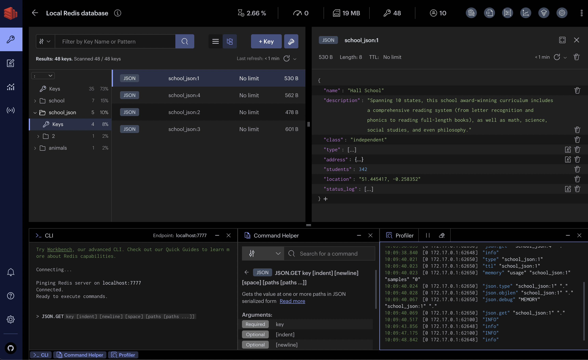

RedisInsight
 项目首页
项目首页
用于管理和监控 Redis 数据库的图形用户界面（GUI）工具。它是由 Redis Labs 开发的，旨在简化开发人员和管理员对 Redis 实例的管理任务。

 如何部署在线 RedisInsight
如何部署在线 RedisInsight
什么是 RedisInsight
- RedisInsight 是 Redis 官方出品的可视化管理工具，支持 String、Hash、Set、List、JSON 等多种数据类型的管理，同时集成了 RedisCli，可进行终端交互。
功能列表
- 可视化界面：RedisInsight 提供了一个直观的用户界面，使用户能够轻松地查看和管理 Redis 数据。它以图形方式显示 key-value 对、数据结构等信息，使用户更容易理解和操作数据。
- 监控和指标：该工具允许用户监控 Redis 服务器的关键性能指标，如内存使用情况、每秒执行的命令数、延迟等。通过监控这些指标，用户可以及时发现潜在的性能问题并进行优化。
- 实时命令和日志：RedisInsight 提供实时的命令执行信息和日志查看功能。这对于故障排除和调试非常有用，用户可以实时跟踪 Redis 实例的操作。
- 数据探索：用户可以使用 RedisInsight 探索 Redis 数据，通过 GUI 界面方便地查看数据结构、进行搜索、排序和筛选等操作。
- 空间分析：工具提供了对 Redis 数据集中键分布的分析功能，帮助用户了解数据分布情况，从而更有效地管理数据。
- 备份和恢复：RedisInsight 允许用户对 Redis 数据进行备份，并在需要时进行恢复。这对于数据恢复和维护非常重要。
- 安全性：RedisInsight 提供身份验证和授权机制，以确保 Redis 实例的安全性。用户可以设置访问控制和管理用户角色。
- 跨平台支持：RedisInsight 支持多个操作系统，包括 Windows、macOS 和 Linux，使其适用于广泛的用户群体。